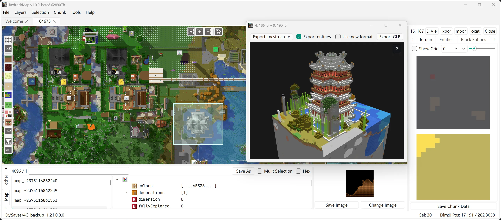

来源：bedrock-dev/BedrockMap · 许可 AGPL-3.0
本页为 BedrockMap 仓库原文说明书（README 与 docs/ 目录）的完整呈现，未改动原文内容。
BedrockMap
基于 Qt6 与 C++17 构建的开源《我的世界》基岩版地图编辑器：浏览、检查与编辑基岩版存档（LevelDB 格式），支持主世界、下界、末地与自定义维度，可查看修改 NBT、框选复制粘贴区块、导出 mcstructure 与 3D 体素预览。

来源：README.zh-CN.md
English | 简体中文
BedrockMap 是一款基于 Qt6 和 C++17 构建的、完全开源的《我的世界》基岩版地图编辑器。它提供了一套全面的工具，用于浏览、检查和编辑基岩版世界存档（LevelDB 格式），支持所有维度。
level.dat、玩家物品栏、村庄、地图物品等.mcstructure 文件（带 3D 体素预览），并可将选中区域或区块导出为
.mcstructure 文件从 Release 页面 下载最新版本。
通过 文件 →
打开世界（Ctrl+O）打开世界，或直接将世界文件夹、.mcstructure、.nbt 文件拖入窗口。
地图视图中：左键拖动平移，右键打开菜单，滚轮按下拖动框选区域，滚动滚轮缩放。
常用快捷键：
| 快捷键 | 功能 |
|---|---|
Ctrl+O / Ctrl+Shift+O |
打开世界 / 打开文件（.mcstructure、.nbt、.nbts） |
Ctrl+C / Ctrl+V |
复制 / 粘贴选中区域（支持跨存档） |
Ctrl+E / Ctrl+I |
导出 / 导入选区 |
Ctrl+D |
删除选中的区块 |
Ctrl+H |
打开 3D 体素视图 |
Alt+1–Alt+4 |
切换维度（主世界 / 下界 / 末地 / 自定义） |
Ctrl+G |
跳转到坐标 |
# 使用子模块克隆
git clone --recursive https://github.com/bedrock-dev/BedrockMap.git
# 构建 BedrockMap
.\scripts\build.ps1 -buildBL支持 Minecraft 基岩版 1.2（可能更早）及以后的世界，直到 1.21 系列（不同版本的区块格式可能不同）。
欢迎通过 Issues 提交 Bug 报告和功能建议。规划中的功能和已知问题见 TODO.md。
BedrockMap 基于 GNU Affero General Public License v3.0 许可证发布。
来源：BedrockMap.md
BedrockMap 是一个用于 Minecraft Bedrock 版的地图查看和编辑器，基于 Qt6 + C++17 开发。它可以打开、浏览和编辑 Bedrock 版存档（LevelDB 格式），支持多维度和多层渲染。
| 属性 | 说明 |
|---|---|
| 项目名称 | BedrockMap |
| 编程语言 | C++17 |
| GUI 框架 | Qt6 (Core, Widgets, Concurrent, OpenGL) |
| 数据存储 | LevelDB (Minecraft Bedrock 格式) |
| 构建系统 | CMake + MinGW Makefiles |
| 许可证 | AGPL |
| 最低依赖 | mingw64, Qt6, LevelDB, zstd |
| 依赖 | 版本要求 | 说明 |
|---|---|---|
| mingw64 | 推荐 | 不支持 MSVC |
| Qt6 | >= 6.0 | 需要 Core, Widgets, Concurrent, OpenGL, OpenGLWidgets 模块 |
| CMake | >= 3.16 | |
| LevelDB | mcpe 定制版 | 预编译库在 bedrock-level/libs/ |
| zstd | 匹配版本 | 预编译库在 bedrock-level/libs/ |
# 1. 克隆仓库
git clone --recursive https://github.com/bedrock-dev/BedrockMap.git
# 2. 编译 bedrock-level 静态库
cd bedrock-level
.\build.ps1
# 3. 编译 BedrockMap 主程序
cd ..
.\scripts\build.ps1
# 4. 编译并运行（含翻译更新）
.\scripts\build_run.ps1| 变量名 | 说明 | 示例 |
|---|---|---|
QT_ROOT |
Qt6 安装根目录 | D:/Qt/6.5.0/mingw64_64 |
CMake 通过 $env:QT_ROOT 查找 Qt6。
BedrockMap/
├── CMakeLists.txt # 顶层 CMake 构建文件
├── config.ini # 运行时配置文件
├── icon.rc # Windows 应用程序图标
├── res.qrc # 动态生成的 Qt 资源文件
├── README.md
├── TODO.md
│
├── bedrock-level/ # Bedrock 存档数据层（静态库）
│ ├── CMakeLists.txt
│ ├── build.ps1 # 编译脚本
│ ├── libs/ # 预编译第三方库 (leveldb, zstd)
│ ├── third/ # 第三方头文件
│ ├── app/ # 辅助工具
│ │ ├── biome_png.cpp # 群系颜色导出工具
│ │ ├── level_stater.cpp # 存档统计工具
│ │ └── missing_color_finder.cpp # 缺失颜色查找工具
│ ├── src/
│ │ ├── include/ # 头文件
│ │ ├── bedrock_level.cpp # 存档管理器
│ │ ├── bedrock_key.cpp # LevelDB Key 编解码
│ │ ├── chunk.cpp # 区块数据
│ │ ├── sub_chunk.cpp # 子区块数据
│ │ ├── nbt.cpp # NBT 标签库
│ │ ├── color.cpp # 颜色表与颜色计算
│ │ ├── data_3d.cpp # 3D 数据（群系/高度图）
│ │ ├── actor.cpp # 实体解析
│ │ ├── player.cpp # 玩家数据（框架）
│ │ ├── global.cpp # 全局数据（村庄等）
│ │ ├── level_dat.cpp # level.dat 解析
│ │ ├── scoreboard.cpp # 计分板
│ │ └── utils.cpp # 工具函数
│ ├── tests/ # Google Test 单元测试
│ │ ├── actor_test.cpp
│ │ ├── bedrock_level_test.cpp
│ │ ├── bit_tools_test.cpp
│ │ ├── chunk_test.cpp
│ │ ├── color_test.cpp
│ │ ├── data3d_test.cpp
│ │ ├── data_dump_test.cpp
│ │ ├── key_test.cpp
│ │ ├── level_dat_test.cpp
│ │ ├── palette_test.cpp
│ │ ├── sub_chunk_test.cpp
│ │ └── utils_test.cpp
│ └── data/colors/ # 方块和群系颜色数据文件
│
├── src/ # GUI 应用程序
│ ├── include/ # 头文件
│ ├── main.cpp # 入口
│ ├── mainwindow.cpp/h # 主窗口
│ ├── leveltabwidget.cpp/h # 多存档标签页管理
│ ├── levelpagewidget.cpp/h # 单存档页面
│ ├── maphost.cpp/h # 地图共享状态 + 编辑操作（非 widget）
│ ├── cpumapwidget.cpp/h # 地图渲染器：QPainter 后端
│ ├── gpumapwidget.cpp/h # 地图渲染器：OpenGL 后端
│ ├── toolbar.cpp # 工具栏（几乎未使用）
│ ├── floatingtoolbar.cpp/h # 浮动工具栏
│ ├── selectionregion.h # 选区管理
│ ├── asynclevelloader.cpp/h # 异步存档加载器
│ ├── chunk_task.cpp/h # 区块加载任务
│ ├── chunkeditorwidget.cpp/h# 区块编辑器
│ ├── chunksectionwidget.cpp/h # 子区块截面视图
│ ├── voxelwidget.cpp/h # 3D 体素渲染器
│ ├── mapitemeditor.cpp/h # 地图物品编辑器
│ ├── nbtwidget.cpp/h # NBT 树形编辑器
│ ├── nbtmodifydialog.cpp/h # NBT 值修改对话框
│ ├── renderfilterdialog.cpp/h # 渲染过滤器
│ ├── gotopositiondialog.cpp/h # 坐标跳转对话框
│ ├── aboutdialog.cpp/h # 关于对话框
│ ├── config.cpp/h # 配置管理
│ ├── resourcemanager.cpp/h # 资源管理与翻译
│ ├── maptile.cpp/h # 地图瓦片数据
│ └── msg.cpp # 消息/字符串常量
│
├── res/ # 资源文件（图标、纹理、着色器、字体）
│ ├── ui/ # UI 图标
│ ├── shaders/ # OpenGL 着色器
│ ├── fonts/ # 字体文件
│ ├── block_actor/ # 方块实体图标
│ ├── entity/ # 实体图标
│ ├── nbt/ # NBT 图标
│ └── village/ # 村庄图标
│
├── translations/ # 翻译文件
│ ├── en.ts # 英文
│ └── zh_CN.ts # 简体中文
│
├── scripts/ # 构建/部署脚本
│ ├── build.ps1
│ ├── build_run.ps1
│ ├── deploy.ps1
│ └── scale_icon.py
│
├── docs/ # 文档
│ └── complie_guide.md
│
├── build/ # 构建输出目录
└── build_rls/ # Release 构建输出目录┌──────────────────────────────────────────────────────────┐
│ GUI 应用层 (src/) │
│ MainWindow → LevelTabWidget → LevelPageWidget │
│ ├── MapHost (共享状态: MapView/MapOverlays/编辑操作) │
│ ├── CpuMapWidget 或 GpuMapWidget (二选一的渲染器) │
│ ├── FloatingToolBar (维度/图层/覆盖控制) │
│ ├── NbtWidget (NBT 编辑器) │
│ ├── ChunkEditorWidget (区块编辑) │
│ └── VoxelWidget (3D 体素渲染) │
└──────────────────────┬────────────────────────────────────┘
│ AsyncLevelLoader
▼
┌──────────────────────────────────────────────────────────┐
│ 数据加载层 (src/) │
│ AsyncLevelLoader │
│ ├── LoadRegionTask/ChunkRegion (异步渲染任务) │
│ ├── 多级缓存 (region_cache, ...) │
│ └── MapFilter (渲染过滤控制) │
└──────────────────────┬────────────────────────────────────┘
│ bl::bedrock_level
▼
┌──────────────────────────────────────────────────────────┐
│ Bedrock 数据层 (bedrock-level/) │
│ bl::bedrock_level │
│ ├── LevelDB 接口 │
│ ├── bl::chunk / bl::sub_chunk │
│ ├── bl::actor / bl::village_data │
│ ├── bl::nbt (NBT 编解码) │
│ └── bl::level_dat │
└──────────────────────┬────────────────────────────────────┘
│ LevelDB C API
▼
┌──────────────────────────────────────────────────────────┐
│ 存储层 │
│ LevelDB (Minecraft Bedrock 格式) │
└──────────────────────────────────────────────────────────┘MainWindow
└── LevelTabWidget (QTabWidget)
├── [Welcome Tab]
└── LevelPageWidget × N
├── AsyncLevelLoader ─── bl::bedrock_level ─── LevelDB
├── MapHost (共享 MapView / MapOverlays / ImportOverlay / 编辑操作)
│ └── 选择 CpuMapWidget 或 GpuMapWidget 之一作为渲染器
│ ├── FloatingToolBar (维度/图层/覆盖)
│ ├── FloatingToolBar (选区模式)
│ ├── RenderFilterDialog
│ ├── GoToPositionDialog
│ ├── VoxelWidget (3D渲染)
│ └── ChunkEditorWidget
│ ├── ChunkSectionWidget
│ ├── NbtWidget (方块实体)
│ ├── NbtWidget (实体)
│ ├── NbtWidget (PendingTicks)
│ └── VoxelWidget (3D预览)
├── LevelStatusBar
└── QTabWidget (NBT数据)
├── NbtWidget (level.dat)
├── NbtWidget (players)
├── NbtWidget (villages)
├── NbtWidget (other)
└── NbtWidget (Map)LevelTabWidget 管理多个存档标签页，每个标签页包含独立的 LevelPageWidgetLevelPageWidget 拥有独立的 AsyncLevelLoader、MapHost
和一个地图渲染器（CpuMapWidget 或 GpuMapWidget，由设置决定）以及 NBT 编辑器该库是一个独立的静态库，封装了 Minecraft Bedrock 版存档的底层数据操作，不依赖 Qt。
bl::bedrock_level — 存档管理器路径: bedrock-level/src/bedrock_level.cpp / include/bedrock_level.h核心职责：
level.dat + 打开 LevelDB 数据库）get_chunk(chunk_pos) 加载区块，支持内部缓存load_raw(key) 读取原始 LevelDB 数据foreach_global_keys() 遍历全局键remove_chunks(positions) 批量删除区块主要方法：
| 方法 | 说明 |
|---|---|
open(const std::string& root) |
打开存档 |
close() |
关闭存档 |
get_chunk(const chunk_pos&, chunk_load_policy) |
加载区块（位掩码：Terrain/PendingTick/Actor/BlockActor/Others，默认 All） |
load_raw(const std::string& key, string& value) |
读取原始数据 |
load_actor(const std::string& raw_uid) |
加载实体 |
load_global_data() |
加载全局数据 |
foreach_global_keys(f) |
遍历全局键 |
remove_chunks(std::set<chunk_pos>&) |
删除区块 |
bl::chunk — 区块路径: bedrock-level/src/chunk.cpp / include/chunk.h表示一个区块（16×256(或384)×16 区域）。
核心数据成员：
| 成员 | 类型 | 说明 |
|---|---|---|
sub_chunks_ |
std::map<int, sub_chunk*> |
子区块按 Y 索引 |
d3d_ |
biome3d |
群系和高度图数据 |
entities_ |
std::vector<bl::actor*> |
实体列表 |
block_entities_ |
std::vector<palette::compound_tag*> |
方块实体 NBT |
pending_ticks_ |
std::vector<palette::compound_tag*> |
计划刻 NBT |
HSAs_ |
std::vector<bl::hardcoded_spawn_area> |
硬编码生成区域 |
chunk_format_ |
LevelChunkFormat |
区块存储格式 |
主要方法：
| 方法 | 说明 |
|---|---|
get_block_with_color(cx, y, cz) |
获取方块信息（名称+颜色） |
get_block_raw(cx, y, cz) |
获取方块原始 NBT |
get_block_color(cx, y, cz) |
获取方块颜色 |
get_biome(cx, y, cz) |
获取群系 |
get_top_biome(cx, cz) |
获取地表群系 |
get_height(cx, cz) |
获取高度 |
map_y_to_subchunk(y, index, offset) |
[静态] Y 坐标到子区块索引映射 |
区块版本：
| 版本 | 说明 |
|---|---|
Old |
1.12~1.17 (Y: 0~255) |
New |
1.18+ (Y: -64~319) |
bl::sub_chunk — 子区块路径: bedrock-level/src/sub_chunk.cpp / include/sub_chunk.h表示 16×16×16 的区域，存储方块调色板。
内部结构：
sub_chunk
├── version_: uint8_t
├── y_index_: int8_t // 子区块 Y 索引
└── layers_: vector<layer*>
└── layer
├── bits: uint8_t // 每个方块的位数
├── type: uint8_t // 调色板类型
├── palette_len: uint32_t // 调色板长度
├── blocks: vector<uint16_t> // 方块索引数组 (4096)
└── palettes: vector<compound_tag*> // 方块调色板主要方法：
| 方法 | 说明 |
|---|---|
load(data, len) |
从二进制数据加载子区块 |
get_block_with_color(rx, ry, rz) |
获取方块（名称+颜色） |
get_block_raw(rx, ry, rz) |
获取方块原始 NBT |
bl::nbt — NBT 标签库路径: bedrock-level/src/nbt.cpp / include/nbt.h自实现的 NBT（Named Binary Tag）编解码库，支持 Bedrock 版使用的所有标签类型。
标签类型枚举：
| 类型 | 值 | 说明 |
|---|---|---|
End |
0 | 结束标记 |
Byte |
1 | 字节 |
Short |
2 | 短整数 |
Int |
3 | 整数 |
Long |
4 | 长整数 |
Float |
5 | 浮点数 |
Double |
6 | 双精度 |
ByteArray |
7 | 字节数组 |
String |
8 | 字符串 |
List |
9 | 列表 |
Compound |
10 | 复合标签 |
IntArray |
11 | 整数数组 |
LongArray |
12 | 长整数数组 |
类继承结构：
abstract_tag (基类)
├── compound_tag (键值对容器)
├── list_tag (有序标签列表)
├── byte_tag / short_tag / int_tag / long_tag
├── float_tag / double_tag
├── string_tag
├── byte_array_tag / int_array_tag / long_array_tag
└── end_tagbl::chunk_pos / bl::block_pos —
坐标系统路径: bedrock-level/src/include/bedrock_key.h| 类型 | 成员 | 说明 |
|---|---|---|
chunk_pos |
x, z (int32), dim (int32) |
区块坐标 + 维度（0=主世界,1=下界,2=末地） |
block_pos |
x, y, z (int) |
方块坐标，提供 to_chunk_pos() 和 in_chunk_offset() 方法 |
维度常量：OverWorld=0, Nether=1, TheEnd=2
bl::chunk_key — LevelDB 键解析路径: bedrock-level/src/include/bedrock_key.hBedrock 版使用复合键结构存储区块数据，不同 Tag 表示不同类型的数据。
主要键类型：
| 类型 | ID | 说明 |
|---|---|---|
Data3D |
43 | 3D 数据（群系+高度） |
VersionNew |
44 | 新版本号 |
Data2D |
45 | 2D 数据（旧版高度+群系） |
SubChunkTerrain |
47 | 子区块地形数据 |
BlockEntity |
49 | 方块实体 |
Entity |
50 | 实体（旧版） |
PendingTicks |
51 | 计划刻 |
HardCodedSpawnAreas |
57 | 硬编码生成区域 |
VersionOld |
118 | 旧版本号 |
bl::data_3d / biome3d — 群系和高度图路径: bedrock-level/src/data_3d.cpp / include/data_3d.h存储和管理区块的 3D 群系数据和高度图。群系枚举包含所有标准 Minecraft 群系类型（0~188+）。
bl::color — 颜色系统路径: bedrock-level/src/color.cpp / include/color.h从数据文件加载方块和群系的颜色映射，提供颜色混合、方块颜色查找等功能。
struct color {
uint8_t r, g, b, a; // RGBA 颜色
};关键函数：
| 函数 | 说明 |
|---|---|
init_block_color_from_file(filename) |
从文件加载方块颜色表 |
init_biome_color_palette_from_file() |
从文件加载群系颜色表 |
get_block_by_name_tag(name, tag) |
根据名称和标签获取方块颜色 |
get_biome_color(biome) |
获取群系颜色 |
blend_color_with_biome(name, color, biome) |
将方块颜色与群系颜色混合 |
bl::actor — 实体路径: bedrock-level/src/actor.cpp / include/actor.h从 NBT 数据解析实体信息，提取 UID、位置、标识符。
| 方法 | 说明 |
|---|---|
load(data, len) |
从二进制加载 |
load_from_nbt(nbt) |
从 NBT 加载 |
uid() |
获取 UID |
pos() |
获取位置 |
identifier() |
获取标识符 |
bl::level_dat — level.dat路径: bedrock-level/src/level_dat.cpp / include/level_dat.h解析 level.dat 文件，提取世界生成点、存储版本、世界名称等信息。提供 NBT 根标签的读写接口。
main.cpp — 入口应用程序入口，负责：
cfg::initConfig())initResources())logs/ 目录）MainWindow — 主窗口路径: src/mainwindow.cpp / include/mainwindow.h顶层窗口，包含：
| 成员 | 说明 |
|---|---|
LevelTabWidget |
存档标签页管理器 |
MapItemEditor |
地图物品编辑器 |
AboutDialog |
关于对话框 |
write_mode_ |
写入模式开关 |
主要操作：
| 操作 | 说明 |
|---|---|
| 打开存档 | 打开文件夹选择对话框，选择存档目录 |
| 关闭存档 | 关闭当前存档 |
| NBT 编辑器 | 打开独立 NBT 编辑器窗口 |
| 快捷键 | 支持自定义快捷键绑定 |
LevelTabWidget — 多存档标签页路径: src/leveltabwidget.cpp / include/leveltabwidget.h基于 QTabWidget，管理多个 LevelPageWidget 实例。
功能：
MainWindow 接收打开存档请求，创建新的标签页currentLevelChanged 通知侧边栏切换LevelDBDebugDialog 用于显示 LevelDB 统计信息LevelPageWidget — 单存档页面路径: src/levelpagewidget.cpp / include/levelpagewidget.h每个打开的存档对应一个 LevelPageWidget，是功能的核心容器。
布局：
LevelPageWidget (QVBoxLayout)
├── QSplitter (Vertical)
│ ├── 活跃的地图渲染器：CpuMapWidget 或 GpuMapWidget (包含浮动工具栏)
│ │ ├── FloatingToolBar (维度/图层/覆盖层) [左上角]
│ │ └── FloatingToolBar (选区模式) [顶部居中]
│ └── QTabWidget (NBT数据) [可折叠]
│ ├── level.dat
│ ├── players
│ ├── villages
│ ├── other
│ └── Map
└── LevelStatusBar (坐标+状态信息)主要方法：
| 方法 | 说明 |
|---|---|
loadLevel(path) |
打开存档并加载全局数据 |
closeLevel() |
关闭存档 |
mapHost() |
获取地图共享状态与编辑操作 |
activeMapPane() |
获取屏幕上那个地图渲染器 |
levelLoader() |
获取异步加载器 |
openFilterDialog() |
打开渲染过滤器对话框 |
toggleGlobalDataWidget() |
切换 NBT 数据面板可见性 |
collectVillagesGuiData(vs) |
收集村庄数据用于渲染 |
CpuMapWidget / GpuMapWidget —
地图渲染器路径: src/cpumapwidget.cpp / include/ui/cpumapwidget.h （CPU 渲染器）
src/gpumapwidget.cpp / include/ui/gpumapwidget.h （GPU 渲染器）两个渲染器是同级、可互换的：CpuMapWidget 用 QPainter
画烘焙好的区块贴图，GpuMapWidget 把同样的烘焙数据上传进一张图集然后用 GLSL 逐像素着色（斜面光照 / AO / 阴影）。
GPU 渲染器的完整流程（每帧顺序、图集与槽位、分辨率选择、瓦片降采样与上传、着色、概览模式、诊断与 bench）见
docs/gpuMapRenderer.md。
它们都只负责自己那份绘制，通过构造函数接收同一组共享对象：
(parent, AsyncLevelLoader*, MapView*, MapOverlays*, ImportOverlay*, MapHost*)共享状态、编辑操作和 overlay 由 MapHost 持有（见 5.2.5.1），LevelPageWidget
只构造其中的一个渲染器，所以不存在“哪个 widget 定义相机”的歧义。
为什么不用公共基类：
GpuMapWidget必须继承QOpenGLWidget（它本身是QWidget）， 再加一层 widget 基类就是菱形继承；而且继承会给每个对象一份状态副本，与“两个渲染器共享同一份视图”正好相反。
上下文菜单、拖拽选区和缩放都由共享对象处理，两个渲染器的事件处理因此完全对称。
缩放级别： 快捷键 Ctrl+滚轮 缩放，范围 cfg::MINIMUM_SCALE_LEVEL ~
cfg::MAXIMUM_SCALE_LEVEL
用户交互： 由共享的 MapInteraction 实现，两个渲染器转发同一套事件：
| 操作 | 功能 |
|---|---|
| 鼠标拖动 | 平移地图 |
| 滚轮 | 缩放地图 |
| 中键拖动 | 创建选区 |
| 右键 | 上下文菜单（复制信息、跳转等） |
| 双击区块 | 打开区块编辑器 |
渲染选项 (RenderOption)：
struct RenderOption {
enum LayerType { Biome, Terrain, Height }; // 图层类型
enum DimType { OverWorld, Nether, TheEnd }; // 维度类型
enum OtherType { Grid, Coords, SlimeChunk, Actors, Village, HSA }; // 覆盖层
DimType dim;
LayerType layer;
std::array<bool, 6> others; // 各覆盖层开关
};坐标变换（都在共享的 MapView 上，两个渲染器读同一份）：
| 方法 | 说明 |
|---|---|
blockPosToViewPos(bp) |
方块坐标 → 视图坐标 |
chunkPosToViewPos(cp) |
区块坐标 → 视图坐标 |
viewPosToChunkPos(vp) |
视图坐标 → 区块坐标 |
viewPosToBlockPos(vp) |
视图坐标 → 方块坐标 |
scaleLevel() |
当前缩放级别下区块的像素宽度 |
chunkPosAt(pos, viewport) |
用指定视口解析坐标（渲染器尺寸可能不同） |
transformForViewport(size) |
按指定视口大小重建变换 |
CPU 渲染管线：
paintEvent() 入口，先 view_->setViewportSize(size()) 与
syncScaleLimits()RenderOption.layer 调用 drawTerrain() / drawBiome()foreachRegionInCamera() 遍历可见区域AsyncLevelLoader 获取缓存的渲染图像drawImageInRegion() 绘制图像MapOverlays 绘制覆盖层：网格、坐标、史莱姆区块、实体、村庄、HSA、选区等GpuMapWidget 走同一条数据来源，但把每区块一个像素的颜色/高度上传进图集，由 res/shaders/map2d.frag 逐屏幕像素着色。
选区系统 (SelectionRegion)：
| 模式 | 说明 |
|---|---|
Replace |
替换选区 |
Add |
追加到选区 |
Subtract |
从选区移除 |
选区用于删除区块操作。通过浮动工具栏的按钮切换模式。选区状态存在 MapView 上，改动统一经 MapView::beginSelectionDrag()
/ finishSelectionDrag() 等方法，因此所有渲染器都会同步重绘。
MapHost — 地图共享状态与编辑操作路径: src/maphost.cpp / include/ui/maphost.h不是 widget。地图的共享状态和关卡编辑操作都在这里，因此切换渲染器不会丢状态，两个渲染器也不可能对不上：
MapView（变换/相机/维度/RenderOption/选区/缩放上下限）、MapOverlays（全部覆盖层）、ImportOverlay（导入/粘贴的放置预览）
ContextMenuBuilder 直接作用于 MapHost，没有中间接口）、截图、导出、删除/清空选区、3D
预览、区块编辑器入口都在这里，所以这些动作只有一份实现MapView，由它发出 viewChanged()，每个渲染器都会重绘FloatingToolBar — 浮动工具栏路径: src/floatingtoolbar.cpp / include/floatingtoolbar.h自定义浮动工具栏组件，叠加在 CpuMapWidget 之上。
功能：
buttonToggled(group, button, checked) 信号AsyncLevelLoader — 异步加载器路径: src/asynclevelloader.cpp / include/asynclevelloader.h核心数据加载和管理层，桥接 GUI 和 bedrock-level 库。
缓存系统：
| 缓存 | 类型 | 说明 |
|---|---|---|
region_cache_ |
QCache<region_pos, ChunkRegion> |
区域渲染图像缓存 |
invalid_cache_ |
QCache<region_pos, char> |
空区域缓存 |
slime_chunk_cache_ |
QCache<region_pos, QImage> |
史莱姆区块缓存 |
异步任务：
LoadRegionTask：加载并渲染 8×8 区块区域（通过 QThreadPool 执行）TaskBuffer<T>：防止同一区域重复加载数据修改方法：
| 方法 | 说明 |
|---|---|
dropChunk(min, max) |
删除区块范围 |
modifyDBGlobal(modifies) |
批量修改全局数据 |
modifyLeveldat(nbt) |
修改 level.dat |
modifyChunkBlockEntities(cp, raw) |
修改区块方块实体 |
modifyChunkPendingTicks(cp, raw) |
修改计划刻 |
modifyChunkActors(cp, v, actors) |
修改区块实体 |
getChunk(p) |
直接获取区块（不缓存） |
ChunkRegion / LoadRegionTask —
区域渲染路径: src/include/chunk_task.h一个 ChunkRegion 表示 8×8 个区块（由 cfg::RW = 8 定义）的渲染结果。
struct ChunkRegion {
BlockTipsInfo tips_info_[128][128]; // 每个方块的信息
std::bitset<64> chunk_bit_map_; // 区块存在性位图
QImage terrain_bake_image_; // 地形渲染图像
QImage biome_bake_image_; // 群系渲染图像
QImage height_bake_image_; // 高度渲染图像
bool valid;
std::unordered_map<QImage*, vector<vec3>> actors_; // 实体位置（图标模式）
std::map<chunk_pos, map<QImage*, ActorCount>> actors_counts_; // 实体位置（计数模式）
std::vector<hardcoded_spawn_area> HSAs_;
};LoadRegionTask::run() 流程：
level_->get_chunk(pos, bl::chunk_load_policy::Terrain | bl::chunk_load_policy::Actor | bl::chunk_load_policy::Others)
加载区块
filter_->renderImages(chunk, ...) 渲染filter_->bakeChunkActors(chunk, ...) 收集实体信息finish() 将结果返回主线程MapFilter — 渲染过滤器路径: src/include/renderfilterdialog.h控制地图渲染的过滤条件：
struct MapFilter {
unordered_set<int> biomes_list_; // 过滤的群系列表
unordered_set<string> blocks_list_; // 过滤的方块列表
unordered_set<string> actors_list_; // 过滤的实体系列
int layer{64}; // 固定 Y 层
bool enable_layer_{false}; // 是否启用固定层模式
bool biome_black_mode_{true}; // true=黑名单，false=白名单
bool block_black_mode_{true}; // true=黑名单，false=白名单
bool actor_black_mode_{true}; // true=黑名单，false=白名单
};ChunkEditorWidget — 区块编辑器路径: src/chunkeditorwidget.cpp / include/chunkeditorwidget.h双击地图上的区块时打开的编辑窗口，显示区块的详细信息：
| 功能 | 说明 |
|---|---|
| 子区块层级浏览 | 通过滑块选择 Y 层 |
| 3D 体素预览 | 使用 VoxelWidget 渲染 |
| 实体 NBT 编辑 | 查看和修改实体数据 |
| 方块实体 NBT 编辑 | 查看和修改方块实体数据 |
| 计划刻 NBT 编辑 | 查看和修改计划刻数据 |
| 区块定位 | 在地图上定位当前区块 |
| 数据导出 | 导出区块数据 |
VoxelWidget — 3D 体素渲染路径: src/voxelwidget.cpp / include/voxelwidget.h基于 OpenGL 3.3 的 3D 体素渲染器，继承 QOpenGLWidget。
功能：
NbtWidget — NBT 树形编辑器路径: src/nbtwidget.cpp / include/nbtwidget.h通用的 NBT 数据浏览器/编辑器，使用 QTreeWidget 展示 NBT 树结构。
| 功能 | 说明 |
|---|---|
| 树形浏览 | 按 Compound/List 层级展开 |
| 值修改 | 弹窗修改标签值 |
| 添加子标签 | 支持向 Compound/List 添加新标签 |
| 删除标签 | 支持删除标签 |
| 数据导入 | 从二进制/JSON 格式导入 NBT |
| 右键菜单 | 复制、修改、添加、删除操作 |
Config — 配置管理路径: src/config.cpp / include/config.h从 config.ini 读取配置，提供全局静态配置变量。
命名空间 cfg 中的关键配置：
| 变量 | 默认值 | 说明 |
|---|---|---|
FONT_FAMILY |
微软雅黑 | 字体族 |
FONT_SIZE |
10 | 字体大小 |
GRID_WIDTH |
1 | 网格宽度（单位：区块） |
SHADOW_LEVEL |
150 | 阴影强度 (0-255) |
ZOOM_SPEED |
1.2 | 缩放速度 |
MINIMUM_SCALE_LEVEL |
2 | 最小缩放级别 |
MAXIMUM_SCALE_LEVEL |
1024 | 最大缩放级别 |
MAP_RENDER_STYLE |
1 | 渲染风格 |
TRANSPARENT_WATER |
true | 透明水渲染 |
THREAD_NUM |
8 | 线程数 |
REGION_CACHE_SIZE |
16384 | 区域缓存容量（条目数） |
OPEN_NBT_EDITOR_ONLY |
false | 仅 NBT 编辑器模式 |
LANGUAGE |
zh_CN | 语言 |
LOAD_GLOBAL_DATA |
true | 加载全局数据 |
RW |
8 | 区域大小（区块数） |
Minecraft Bedrock 版使用复合键存储数据，格式为：
chunk_key = prefix(1byte) + dim(4bytes) + cx(4bytes) + cz(4bytes) + tag(1byte) [+ y_index(1byte)]| 字段 | 大小 | 说明 |
|---|---|---|
| prefix | 1 byte | 固定为 0x00 |
| dim | 4 bytes | 维度 ID |
| cx, cz | 4+4 bytes | 区块坐标 |
| tag | 1 byte | 数据类型 ID |
| y_index | 1 byte | 仅 SubChunkTerrain 需要 |
Chunk (16×?×16)
├── SubChunk (-4\~19 or 0\~15)
│ ├── Version (uint8)
│ ├── Y Index (int8)
│ ├── Layers Count (uint8)
│ └── Layer
│ ├── Bits Per Block (uint8)
│ ├── Palette Type (uint8)
│ ├── Block Indices (4096 × uint16)
│ └── Palette (NBT Compound 列表)
├── Biome3D / HeightMap
├── Entities (actor 列表)
├── Block Entities (NBT Compound 列表)
├── Pending Ticks (NBT Compound 列表)
└── Hardcoded Spawn Areas世界坐标 (block_pos)
↓ ÷16
区块坐标 (chunk_pos) ← 包含维度 (dim=0,1,2)
↓
子区块 (sub_chunk) ← Y÷16 索引，16^3 区域
↓
局部坐标 (rx, ry, rz) ← 子区块内的 0~15 偏移paintEvent()
├── 计算相机范围 (camera_)
├── 设置世界-视图变换矩阵 (world_to_view_xf_)
├── 根据图层选择渲染函数
│ ├── drawTerrain() → foreachRegionInCamera()
│ ├── drawBiome() → foreachRegionInCamera()
│ └── drawHeight() → foreachRegionInCamera()
├── 绘制覆盖层（按 RenderOption.others 控制）
│ ├── drawGrid()
│ ├── drawChunkPosText()
│ ├── drawSlimeChunks()
│ ├── drawActors()
│ ├── drawVillages()
│ ├── drawHSAs()
│ └── drawSelection()
├── drawMarkers() (打开区块标记)
└── drawDebugWindow() (调试信息)tryGetRegion(region_pos)
├── 检查 invalid_cache_（空区域缓存命中 → 返回 nullptr）
├── 检查 region_cache_（渲染缓存命中 → 返回 ChunkRegion*）
├── 检查 TaskBuffer (processing_) 防止重复提交
└── 提交 LoadRegionTask 到线程池
└── run()
├── 遍历 8×8 区块
│ ├── level_->get_chunk(pos) 加载区块
│ └── 跳过无效/空区块
├── MapFilter::renderImages()
│ ├── 确定 Y 层（固定层或最高非空方块）
│ ├── 遍历 16×16 柱状区域
│ │ ├── get_block_with_color() 获取方块（名称+颜色）
│ │ ├── 应用方块/群系过滤
│ │ └── 设置像素颜色
│ └── 生成 terrain/biome/height 三张图像
├── MapFilter::bakeChunkActors()
│ ├── 遍历实体
│ └── 记录位置到 actor 列表
└── emit finish() 通知主线程| 风格值 | 说明 |
|---|---|
| 0 | 无阴影（最快性能） |
| 1 | 基础阴影（平衡性能和效果） |
| 2 | 基于光照模型的高级阴影（实验性） |
| 功能 | 位置 | 说明 |
|---|---|---|
| 删除区块 | MapHost (批量) | 选中区域后删除区块（使用 AsyncLevelLoader::dropChunk()） |
| 修改 level.dat | NbtWidget (level.dat) | 修改后通过 modifyLeveldat() 保存 |
| 修改玩家 NBT | NbtWidget (players) | 通过 modifyDBGlobal() 保存 |
| 修改村庄 NBT | NbtWidget (villages) | 通过 modifyDBGlobal() 保存 |
| 修改其他全局 NBT | NbtWidget (other) | 通过 modifyDBGlobal() 保存 |
| 修改方块实体 | ChunkEditorWidget | 通过 modifyChunkBlockEntities() 保存 |
| 修改实体 | ChunkEditorWidget | 通过 modifyChunkActors() 保存 |
| 修改计划刻 | ChunkEditorWidget | 通过 modifyChunkPendingTicks() 保存 |
| 地图物品编辑 | MapItemEditor | 修改地图物品 NBT 和图像数据 |
MapHost::delete_chunks() 仅标记为
TODO，选区已有完整框架，但复制粘贴功能未实现write_mode_ 已定义但未接线到完整编辑流程MainWindow 中定义了 write_mode_ 标志，可通过 enable_write()
查询，但在当前代码中未集成到完整的编辑工作流中。
config.ini 运行时配置文件详情见 配置文件源码。
配置文件与可执行文件位于同一目录。
| 章节 | 键 | 默认值 | 说明 |
|---|---|---|---|
[Gui] |
theme |
light |
应用主题 |
font_family |
空 | 自定义字体 | |
font_size |
-1 |
字体大小 | |
nbt_editor_mode |
false |
纯 NBT 编辑器模式启动 | |
[Map] |
render_style |
1 |
渲染风格（0/1/2） |
terrian_shadow_level |
150 |
地形阴影强度 | |
min_scale_level |
2 |
最小缩放级别（低于它改用区块坐标总览） | |
max_scale_level |
1024 |
最大缩放级别 | |
zoom_speed |
1.2 |
缩放速度 | |
grid_line_color |
#bbbbbb |
网格线颜色 | |
actor_render_style |
0 |
实体渲染风格 | |
actor_border_width |
2 |
实体边界宽度 | |
actor_border_color |
#000000 |
实体边界颜色 | |
void_color |
#dddddd |
空白区域颜色 | |
transparent_water |
true |
透明水渲染 | |
[Cache] |
region_cache_size |
16384 |
区域渲染缓存容量 |
empty_cache_size |
65536 |
空区域缓存容量 | |
max_thread_num |
8 |
最大线程数 | |
[Misc] |
load_global_data |
true |
加载全局数据 |
max_global_data_load_count |
4096 |
全局数据最大加载数量 | |
[Lang] |
lang |
zh_CN |
语言设置 |
项目使用 Qt 的国际化系统：
translations/ 目录zh_CN.ts) 和英文 (en.ts)lupdate 提取可翻译字符串qt6_add_translations() 自动编译 .ts → .qmTranslatorMgr 管理翻译器切换[Lang] 章节读取语言设置| 快捷键 | 功能 |
|---|---|
| Ctrl+O | 打开存档 |
| Ctrl+W | 关闭存档 |
| Ctrl+滚轮 | 缩放地图 |
| 鼠标拖动 | 平移地图 |
| 鼠标中键 | 选区操作 |
| G | 跳转到坐标 |
| Ctrl+S | 截图保存 |
| 常量名 | 值 | 说明 |
|---|---|---|
cfg::RW |
8 | 区域大小（区块数） |
| 子区块大小 | 16 | 16×16×16 方块 |
| 区块大小 | 16 | 16×?×16 方块 |
| 依赖 | 说明 |
|---|---|
| Qt6 | GUI 框架 |
| LevelDB (mcpe) | Minecraft Bedrock 定制版 |
| zstd | 压缩库（LevelDB 依赖） |
| Google Test | 单元测试框架（仅测试需要） |
| stb_image | 图像读写库（颜色表导出工具需要） |
来源：complieGuide.md
本项目默认使用的编译器是mingw64 + Qt5.12,其他编译器如msvc理论上可以编译，但是没有经过充分测试，因此推荐使用mingw64。
下载源码:
git clone --recursive https://github.com/bedrock-dev/BedrockMap.git进入bedrock目录后编译bedrock-level
cd .\bedrock-level\
.\build.ps1编译并运行BedrockMap
.\scripts\build.ps1注意默认编译的是开发版本，如果有打包需求请自行修改build.ps1脚本
来源：newMapRender.md
本方案将整个体素世界抽象为两张核心数据图：
渲染时，用一张全屏 Quad 配合 Fragment Shader，根据屏幕坐标反算地图坐标，采样地表图和高度图，合成最终画面。阴影和 AO 通过离线烘焙写入纹理，运行时零开销。
整个场景只有一个 Draw Call。
| 数据 | 内容 | 建议格式 | 说明 |
|---|---|---|---|
| 地表图 | 方块类型 ID | uint8 / uint16 |
决定颜色/材质 |
| 高度图 | 每格高度值 | uint8 / uint16 |
决定遮挡、位移 |
| AO 图 | 烘焙环境光遮蔽 | uint8 |
离线生成 |
| 阴影图 | 烘焙阴影 | uint8 |
离线生成 |
| 光照图（可选） | 烘焙光照 | uint8 / vec3 |
离线生成 |
以 3840 × 2160 为例：
| 纹理 | 格式 | 大小 |
|---|---|---|
| 地表图 | uint16 |
~16 MB |
| 高度图 | uint16 |
~16 MB |
| AO 图 | uint8 |
~8 MB |
| 阴影图 | uint8 |
~8 MB |
| 合计 | ~48 MB |
结论：4K 全图完全可以一次性加载进显存，无需动态加载。
如果未来地图更大或显存受限，可按 Chunk 分块：
世界地图 (4K)
└── Region (512×512)
└── Chunk (64×64)
└── Tile (单格)每个 Chunk 对应纹理图集中的一块区域，可独立加载、卸载、更新。
┌─────────────────────────────────────────┐
│ 1. 全屏 Quad（4 顶点） │
│ 2. Fragment Shader： │
│ - 屏幕坐标 → 地图坐标 │
│ - 采样地表图、高度图、AO、阴影 │
│ - 高度位移 + 光照合成 │
│ 3. 输出最终颜色 │
└─────────────────────────────────────────┘vec2）和 UV（vec2）vkCmdDraw，一个 Draw Call// 伪代码
vec2 mapCoord = screenToMap(fragUV); // 屏幕 → 地图坐标
uint terrain = sampleTerrain(mapCoord); // 采样地表图
float height = sampleHeight(mapCoord); // 采样高度图
float ao = sampleAO(mapCoord); // 采样 AO
float shadow = sampleShadow(mapCoord); // 采样阴影
vec3 baseColor = lookupColor(terrain); // 方块类型 → 颜色
vec2 offset = heightToOffset(height); // 高度 → 屏幕位移（2.5D 立体感）
vec3 finalColor = baseColor * ao * shadow;高度图除了算 AO 和阴影，还能产生视觉位移：
固定俯视下，屏幕坐标到地图坐标是一个简单的线性变换：
mapX = (screenX - cameraOffsetX) * scale
mapY = (screenY - cameraOffsetY) * scale无需透视投影，无需矩阵变换。
2.5D 高度场下，AO 取决于邻域高度差：
对每个格子，检查周围 8 个邻居：
float ao = 0.0;
for (each neighbor in 8 directions) {
float diff = neighborHeight - currentHeight;
if (diff > 0) {
ao += clamp(diff / maxDiff, 0.0, 1.0) * weight;
}
}
ao = 1.0 - ao * aoStrength;uint8 纹理固定方向光下，每个格子的阴影取决于沿光方向是否被更高的格子挡住。
1. 将高度图构建为四叉树
2. 对每个格子，沿光方向投射一条射线
3. 用四叉树快速跳过不需要检测的区域
4. 判断是否被遮挡四叉树的作用：
固定光照方向下，阴影方向固定：
uint8 纹理（0 = 全阴影，255 = 无阴影）因为没有 Mesh：
+----+----+----+----+
| C0 | C1 | C2 | C3 |
+----+----+----+----+
| C4 | C5 | C6 | C7 |
+----+----+----+----+
| ... |
+----+----+----+----+1. 检测需要加载/卸载的 Chunk
2. 生成或读取 Chunk 数据
3. 计算 AO、阴影（仅受影响的 Chunk）
4. 用 staging buffer 上传到纹理图集
5. 标记 Chunk 状态uint8 数据仅 4KB，开销极小QVulkanWindow 负责：
渲染逻辑全部自己实现。
| 资源 | 用途 |
|---|---|
| 顶点缓冲 | 全屏 Quad（4 顶点） |
| 索引缓冲 | 2 个三角形 |
| 纹理 | 地表图、高度图、AO、阴影 |
| 采样器 | 最近邻（保持像素感） |
| 描述符集 | 绑定纹理 |
| 管线 | 一个图形管线 |
| Uniform | 相机偏移、缩放 |
startNextFrame():
1. 更新 Uniform（相机偏移）
2. 绑定管线、描述符集
3. 绑定顶点/索引缓冲
4. vkCmdDrawIndexed(6, 1, 0, 0, 0)
5. frameReady()每帧只有一个 Draw Call。
// 创建 staging buffer
// 填充数据
// vkCmdCopyBufferToImage
// 转换 layout 为 SHADER_READ_ONLY_OPTIMAL| 指标 | 预期值 |
|---|---|
| Draw Call | 1 |
| 顶点数 | 4 |
| 三角形数 | 2 |
| 纹理采样 | 每像素 4~5 次 |
| 显存占用 | ~50 MB（4K 全图） |
| 运行时 CPU 开销 | 极低（仅更新 Uniform） |
| 帧率 | 4K 60fps 轻松达成 |
性能瓶颈几乎全在 Fragment Shader 的采样和合成上，现代 GPU 完全无压力。
| 方案 | 是否适合 |
|---|---|
| 建 Mesh + 光栅化 | ❌ 多余 |
| 硬件光追 | ❌ 完全不需要 |
| 软件高度场求交（四叉树） | ✅ 用于烘焙阴影/AO |
| 全屏 Quad + 高度图 | ✅ 最终渲染方式 |
| 离线烘焙 AO + 阴影 | ✅ 运行时零开销 |
uint8/uint16 注意 Vulkan 格式支持